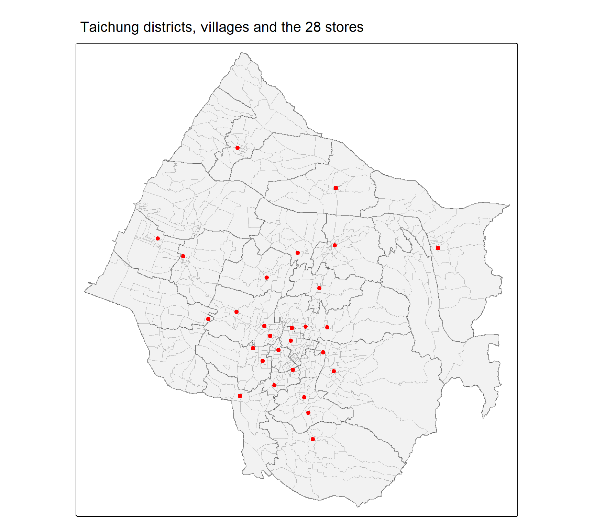
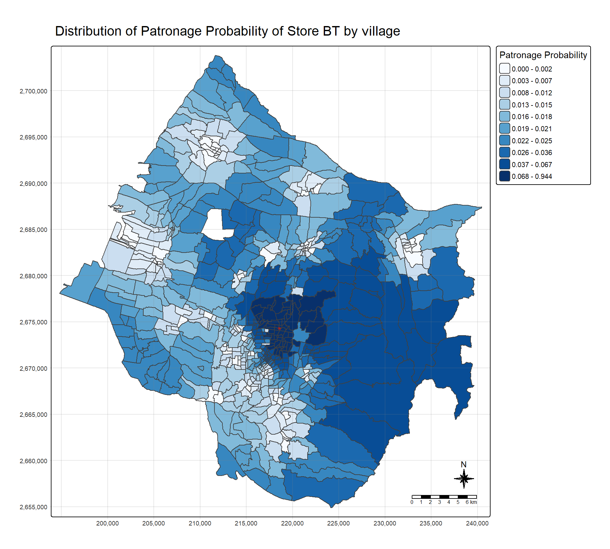
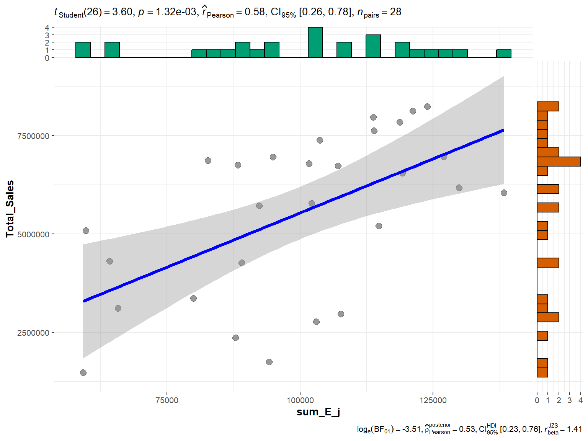

pacman::p_load(sf, tidyverse, MCI, tmap, ggstatsplot)Hands-on Exercise 8: Market Area Analysis for Retail and Service Locations using Huff Model
Overview
Market area analysis, also called trade area analysis, asks where a store’s customers come from. The Huff model answers it probabilistically. Rather than assigning each neighbourhood to one store, it gives every neighbourhood a probability of patronising every store, rising with the store’s attractiveness and falling with the distance to it, and normalised so that the probabilities across all competing stores sum to one.
For an origin i and store j, the model computes a utility Uij = Ajγ · dijλ, where Aj is the attractiveness of the store and dij the distance to it, and then divides by the sum of the utilities over all stores to get the probability pij. With the defaults used by MCI, γ = 1 and λ = −2, so attractiveness enters linearly and distance as an inverse square.
This exercise places the model in the position of a business development analyst at a fast-food franchise with 28 stores in Taichung City. The task is to delineate each store’s trade area across Taichung’s villages, map it, and use the probabilities together with village population to estimate how many customers each store should draw.
商圈分析（market area analysis，又称 trade area analysis）要回答的问题是：一家店的顾客从哪里来。Huff 模型以概率方式作答。它不把每个社区划给唯一一家店，而是给每个社区赋予光顾每一家店的概率：店的吸引力越大概率越高，距离越远概率越低，并且经过归一化，使一个社区对所有竞争门店的概率之和为一。
对起点 i 与门店 j，模型先计算效用 Uij = Ajγ · dijλ，其中 Aj 是门店吸引力，dij 是到该店的距离；再除以对所有门店效用的总和，得到概率 pij。MCI 的默认值为 γ = 1、λ = −2，即吸引力线性进入，距离以平方反比进入。
本练习设定的情景是：一家快餐连锁品牌的业务拓展分析员，面对台中市的 28 家门店。任务是在台中各村里上划定每家店的商圈、绘制地图，并结合村里人口与概率，估计每家店应当吸引多少顾客。
The Data
Five files are used.
STORES_TC, the 28 store locations, as a point shapefile.TOWN_TC, district boundaries, used only for the overview map.VILLAGE_TC, 622 village (里) boundaries, the origins of the model.pop2019.csv, the household, total, male and female population of each village at the end of 2019. TheINFO_TIMEvalue108Y12Mis year 108 of the Republic of China calendar, which is 2019.Store_sales_data.csv, sales records with a store code, a point-of-sale code, a count of bills and an amount.
The data folder also ships STORES_TC1, a 29-store version of the store layer, and storeCD.csv, which gives every store a capacity of 50. The chapter uses neither, and neither is used here.
共用到五份文件。
STORES_TC，28 家门店的位置，点状 shapefile。TOWN_TC，行政区边界，只用于总览地图。VILLAGE_TC，622 个村里边界，即模型的起点。pop2019.csv，各村里 2019 年底的户数、总人口、男性与女性人口。INFO_TIME的值108Y12M指民国 108 年，即 2019 年。Store_sales_data.csv，销售记录，含门店代码、销售点代码、单数与金额。
数据文件夹里还附带 STORES_TC1（29 家门店版本的门店图层）和 storeCD.csv（给每家店的容量都是 50）。教材没有用到这两份，这里也不用。
Getting Started
Five packages carry the work. sf imports the layers and computes the distance matrix, MCI fits the Huff model, tidyverse handles the tables, tmap draws the maps, and ggstatsplot tests the sales estimate against actual sales.
五个包承担全部工作。sf 导入图层并计算距离矩阵，MCI 拟合 Huff 模型，tidyverse 处理表格，tmap 绘制地图，ggstatsplot 把销售估计值与实际销售额做检验。
Importing Data
Importing geospatial data
stores <- st_read(dsn = "data/geospatial",
layer = "STORES_TC")Reading layer `STORES_TC' from data source
`C:\Users\Imgigi\Desktop\629\hand-on-ex\hand-on-ex8\data\geospatial'
using driver `ESRI Shapefile'
Simple feature collection with 28 features and 3 fields
Geometry type: POINT
Dimension: XY
Bounding box: xmin: 202702.9 ymin: 2662196 xmax: 232773.2 ymax: 2693557
Projected CRS: TWD97 / TM2 zone 121town <- st_read(dsn = "data/geospatial",
layer = "TOWN_TC")Reading layer `TOWN_TC' from data source
`C:\Users\Imgigi\Desktop\629\hand-on-ex\hand-on-ex8\data\geospatial'
using driver `ESRI Shapefile'
Simple feature collection with 28 features and 7 fields
Geometry type: POLYGON
Dimension: XY
Bounding box: xmin: 194797.1 ymin: 2654887 xmax: 240450.2 ymax: 2703838
Projected CRS: TWD97 / TM2 zone 121village <- st_read(dsn = "data/geospatial",
layer = "VILLAGE_TC")Reading layer `VILLAGE_TC' from data source
`C:\Users\Imgigi\Desktop\629\hand-on-ex\hand-on-ex8\data\geospatial'
using driver `ESRI Shapefile'
Simple feature collection with 622 features and 10 fields
Geometry type: MULTIPOLYGON
Dimension: XY
Bounding box: xmin: 194797.1 ymin: 2654887 xmax: 240450.2 ymax: 2703838
Projected CRS: TWD97 / TM2 zone 121All three layers are already in TWD97 / TM2 zone 121, EPSG:3826, a projected system in metres, so no reprojection is needed and the distances computed later come out in metres directly. There are 28 stores, 28 districts and 622 village polygons.
Taichung has 29 districts, and the one missing from both boundary layers is Heping (和平區), the large mountain district in the east. The study area is therefore the 28 western districts, which is where all 28 stores are.
三个图层都已是 TWD97 / TM2 zone 121（EPSG:3826），以米为单位的投影坐标系，因此无需重投影，后面算出的距离直接就是米。共有 28 家门店、28 个行政区、622 个村里多边形。
台中市共有 29 个行政区，两个边界图层都缺的是东部面积很大的山区和平区。因此研究区域是西部 28 个区，28 家门店也都在这里。
tm_shape(town) +
tm_polygons(fill = "grey95", col = "grey40", lwd = 1.2) +
tm_shape(village) +
tm_borders(col = "grey70", lwd = 0.3) +
tm_shape(stores) +
tm_dots(size = 0.4, fill = "red", col = "black") +
tm_title("Taichung districts, villages and the 28 stores")
The chapter draws this overview in interactive mode. It is drawn statically here because 622 village polygons sent to the browser make the page far heavier than a locator map warrants. Most stores sit in the city core and the ring of districts around it. The rest are spread one or two to an outlying district: Wuqi, Shalu and Longjing towards the coast, Dajia, Houli, Fengyuan and Shengang to the north, Wuri, Dali and Wufeng to the south, and Dongshi alone in the east. The large hill area in the south-east has no store at all.
教材以交互模式绘制这张总览图。这里改用静态模式，因为把 622 个村里多边形发送到浏览器，会让页面远比一张定位图所值的更重。多数门店位于市区核心及其周边一圈行政区；其余则在外围各区分布一到两家：靠海的梧栖、沙鹿与龙井，北边的大甲、后里、丰原与神冈，南边的乌日、大里与雾峰，以及东边单独的东势。东南部大片丘陵则完全没有门店。
Importing aspatial data
pop2019 <- read_csv("data/aspatial/pop2019.csv")
store_sales <- read_csv("data/aspatial/Store_sales_data.csv")summary(store_sales) Store Code POD code Bills Amount
Length:5499 Length:5499 Min. : 1.0 Min. : 0
Class :character Class :character 1st Qu.: 37.0 1st Qu.: 26703
Mode :character Mode :character Median : 186.0 Median : 139643
Mean : 331.9 Mean : 236787
3rd Qu.: 457.0 3rd Qu.: 331952
Max. :7764.0 Max. :6076060
Ave Bill
Min. : 0.0
1st Qu.: 661.3
Median : 730.5
Mean : 825.1
3rd Qu.: 862.2
Max. :24356.0 5,499 sales records. Each row is one store code and one point-of-sale code, with the number of bills and the amount. The mean bill is about 825 and the median 731, and the zero minimum of Amount comes from 23 rows that record bills but no amount.
共 5,499 条销售记录，每行是一个门店代码加一个销售点代码，记录单数与金额。平均客单约 825，中位数 731。Amount 最小值为零，来自 23 行有单数但金额为零的记录。
Data Preparation
Aggregating store sales
store_sales_aggre <- store_sales %>%
group_by(`Store Code`) %>%
summarise(Total_Bill = sum(Bills, na.rm = TRUE),
Total_Sales = sum(Amount, na.rm = TRUE))
nrow(store_sales_aggre)[1] 234The sales file is wider than the store layer. It aggregates to 234 store codes, one of them missing, while the store layer holds 28:
销售文件的范围比门店图层更大。它汇总后有 234 个门店代码（其中一个为缺失值），而门店图层只有 28 家：
store_sales %>%
mutate(in_store_layer = `Store Code` %in% stores$Store_CD) %>%
group_by(in_store_layer) %>%
summarise(store_codes = n_distinct(`Store Code`),
rows = n(),
share_of_amount = round(sum(Amount) / sum(store_sales$Amount), 3))# A tibble: 2 × 4
in_store_layer store_codes rows share_of_amount
<lgl> <int> <int> <dbl>
1 FALSE 206 4821 0.881
2 TRUE 28 678 0.119The 28 Taichung stores account for 678 of the 5,499 rows and 11.9 per cent of the total amount. The other 206 codes have no location in this dataset and drop out at the join below. Every one of the 28 stores does find its sales, so nothing is lost on the side that matters.
28 家台中门店占 5,499 行中的 678 行、总金额的 11.9%。其余 206 个代码在本数据中没有位置，会在下面的连接中被舍去。28 家门店每一家都能找到对应的销售数据，因此真正需要的那一侧没有任何损失。
Relational join
stores <- stores %>%
left_join(store_sales_aggre,
by = join_by(Store_CD == `Store Code`)) %>%
mutate(Store_size = 100)summary(stores) Store_Name Store_Addr Store_CD Total_Bill
Length:28 Length:28 Length:28 Min. : 1767
Class :character Class :character Class :character 1st Qu.: 5698
Mode :character Mode :character Mode :character Median : 8634
Mean : 8021
3rd Qu.:10349
Max. :14468
Total_Sales geometry Store_size
Min. :1475963 POINT :28 Min. :100
1st Qu.:4044821 epsg:3826 : 0 1st Qu.:100
Median :6116336 +proj=tmer...: 0 Median :100
Mean :5542852 Mean :100
3rd Qu.:6959911 3rd Qu.:100
Max. :8234234 Max. :100 No missing values. Total sales per store run from 1.48 million to 8.23 million, a range of more than fivefold.
Store_size = 100 gives every store the same attractiveness. That choice matters more than it looks. With Aj identical for every store, it cancels out of the Huff ratio, and the probabilities depend on distance alone. The consequence is taken up at the end of the exercise.
没有缺失值。各店总销售额从 148 万到 823 万，相差五倍有余。
Store_size = 100 让每家店的吸引力都相同。这个选择的影响比看上去大：Aj 对每家店都一样，它就在 Huff 比值中约掉了，概率只取决于距离。其后果在练习末尾讨论。
Tidying pop2019 data.frame
glimpse(pop2019)Rows: 625
Columns: 11
$ COUNTY_ID <dbl> 66000, 66000, 66000, 66000, 66000, 66000, 66000, 66000, 6600…
$ COUNTY <chr> "臺中市", "臺中市", "臺中市", "臺中市", "臺中市", "臺中市", "臺中市", "臺中市", "臺中市…
$ TOWN_ID <dbl> 66000110, 66000110, 66000110, 66000110, 66000110, 66000110, …
$ TOWN <chr> "大甲區", "大甲區", "大甲區", "大甲區", "大甲區", "大甲區", "大甲區", "大甲區", "大甲區…
$ V_ID <chr> "66000110-002", "66000110-009", "66000110-021", "66000110-00…
$ VILLAGE <chr> "大甲里", "中山里", "太白里", "孔門里", "文曲里", "文武里", "日南里", "平安里", "江南里…
$ H_CNT <dbl> 454, 1781, 406, 383, 355, 2071, 2039, 785, 461, 559, 769, 80…
$ P_CNT <dbl> 1255, 5252, 1471, 1001, 1264, 6687, 6739, 2642, 1618, 1977, …
$ M_CNT <dbl> 626, 2533, 758, 538, 640, 3244, 3406, 1310, 838, 983, 1273, …
$ F_CNT <dbl> 629, 2719, 713, 463, 624, 3443, 3333, 1332, 780, 994, 1239, …
$ INFO_TIME <chr> "108Y12M", "108Y12M", "108Y12M", "108Y12M", "108Y12M", "108Y…glimpse(village)Rows: 622
Columns: 11
$ VILLCODE <chr> "66000110029", "66000120001", "66000120002", "66000120003",…
$ COUNTYNAME <chr> "臺中市", "臺中市", "臺中市", "臺中市", "臺中市", "臺中市", "臺中市", "臺中市", "臺中…
$ TOWNNAME <chr> "大甲區", "清水區", "清水區", "清水區", "清水區", "清水區", "清水區", "清水區", "清水…
$ VILLNAME <chr> "建興里", "鰲峰里", "靈泉里", "清水里", "文昌里", "南寧里", "西寧里", "北寧里", "中興…
$ VILLENG <chr> "Jianxing Vil.", "Aofeng Vil.", "Lingquan Vil.", "Qingshui …
$ COUNTYID <chr> "B", "B", "B", "B", "B", "B", "B", "B", "B", "B", "B", "B",…
$ COUNTYCODE <chr> "66000", "66000", "66000", "66000", "66000", "66000", "6600…
$ TOWNID <chr> "B11", "B12", "B12", "B12", "B12", "B12", "B12", "B12", "B1…
$ TOWNCODE <chr> "66000110", "66000120", "66000120", "66000120", "66000120",…
$ NOTE <chr> NA, NA, NA, NA, NA, NA, NA, NA, NA, NA, NA, NA, NA, NA, NA,…
$ geometry <MULTIPOLYGON [m]> MULTIPOLYGON (((211953.9 27..., MULTIPOLYGON (…The two join keys encode the same village differently. V_ID in the population table carries a hyphen, as in 66000110-002, while VILLCODE in the boundary layer does not, as in 66000110029. Removing the hyphen makes them comparable:
两个连接键用不同格式编码同一个村里。人口表的 V_ID 带连字符，如 66000110-002；边界图层的 VILLCODE 则没有，如 66000110029。去掉连字符后两者就能对上：
pop2019 <- pop2019 %>%
mutate(V_ID = str_remove_all(V_ID, "-"))Before joining, a check in both directions shows which records will not match:
连接之前，先双向检查哪些记录对不上：
village %>%
st_drop_geometry() %>%
anti_join(pop2019, by = join_by(VILLCODE == V_ID)) %>%
select(VILLCODE, TOWNNAME, VILLNAME, NOTE) VILLCODE TOWNNAME VILLNAME NOTE
1 66000120S01 清水區 <NA> 未編定村里
2 66000120S02 清水區 <NA> 未編定村里
3 66000140S01 梧棲區 <NA> 未編定村里
4 66000250S01 龍井區 <NA> 未編定村里
5 66000120S03 清水區 <NA> 未編定村里pop2019 %>%
anti_join(st_drop_geometry(village), by = join_by(V_ID == VILLCODE)) %>%
select(V_ID, TOWN, VILLAGE, P_CNT)# A tibble: 8 × 4
V_ID TOWN VILLAGE P_CNT
<chr> <chr> <chr> <dbl>
1 66000290004 和平區 中坑里 519
2 66000290002 和平區 天輪里 469
3 66000290008 和平區 平等里 1013
4 66000290005 和平區 自由里 1253
5 66000290001 和平區 南勢里 2142
6 66000290007 和平區 梨山里 2254
7 66000290003 和平區 博愛里 1919
8 66000290006 和平區 達觀里 1333The two lists are different villages, not the same villages under mismatched codes. The five boundary polygons with no population are flagged 未編定村里, unassigned land that belongs to no village, in Qingshui, Wuqi and Longjing, so they have no population to join. The eight population records with no polygon are the eight villages of Heping District, 10,902 residents in all, which the boundary layer does not cover. Neither group can be repaired by fixing the key.
这两份清单是不同的村里，而不是同一批村里因代码不一致而没对上。五个没有人口的边界多边形标注为 未編定村里，即不属于任何村里的未编定土地，位于清水、梧栖与龙井，本就没有人口可连接。八条没有多边形的人口记录，是和平区的八个里，共 10,902 人，边界图层没有覆盖它们。两组都不是修正连接键能解决的。
village <- village %>%
left_join(pop2019,
by = join_by(VILLCODE == V_ID))Check for missing or zero values
summary(village) VILLCODE COUNTYNAME TOWNNAME VILLNAME
Length:622 Length:622 Length:622 Length:622
Class :character Class :character Class :character Class :character
Mode :character Mode :character Mode :character Mode :character
VILLENG COUNTYID COUNTYCODE TOWNID
Length:622 Length:622 Length:622 Length:622
Class :character Class :character Class :character Class :character
Mode :character Mode :character Mode :character Mode :character
TOWNCODE NOTE COUNTY_ID COUNTY
Length:622 Length:622 Min. :66000 Length:622
Class :character Class :character 1st Qu.:66000 Class :character
Mode :character Mode :character Median :66000 Mode :character
Mean :66000
3rd Qu.:66000
Max. :66000
NA's :5
TOWN_ID TOWN VILLAGE H_CNT
Min. :6.6e+07 Length:622 Length:622 Min. : 180
1st Qu.:6.6e+07 Class :character Class :character 1st Qu.: 724
Median :6.6e+07 Mode :character Mode :character Median :1335
Mean :6.6e+07 Mean :1592
3rd Qu.:6.6e+07 3rd Qu.:2195
Max. :6.6e+07 Max. :7599
NA's :5 NA's :5
P_CNT M_CNT F_CNT INFO_TIME
Min. : 487 Min. : 257 Min. : 230 Length:622
1st Qu.: 2139 1st Qu.:1095 1st Qu.:1053 Class :character
Median : 3862 Median :1911 Median :1934 Mode :character
Mean : 4545 Mean :2234 Mean :2311
3rd Qu.: 6151 3rd Qu.:3022 3rd Qu.:3171
Max. :18652 Max. :8741 Max. :9911
NA's :5 NA's :5 NA's :5
geometry
MULTIPOLYGON :622
epsg:3826 : 0
+proj=tmer...: 0
The five unassigned polygons show up as five missing values in every population field. Village population runs from 487 to 18,652, with a median of 3,862, and no village has a population of zero. The five polygons are removed:
五个未编定多边形在每个人口字段中都表现为五个缺失值。村里人口从 487 到 18,652，中位数 3,862，没有人口为零的村里。删去这五个多边形：
village <- village %>%
filter(!is.na(P_CNT))
village %>%
st_drop_geometry() %>%
summarise(villages = n(),
total_population = sum(P_CNT),
across(c(H_CNT, P_CNT, M_CNT, F_CNT), ~ any(is.na(.x)))) villages total_population H_CNT P_CNT M_CNT F_CNT
1 617 2804359 FALSE FALSE FALSE FALSE617 villages remain, with no missing values in any of the four count fields, and a total population of 2,804,359. The chapter checks the four fields with four separate any(is.na()) calls; one summarise() with across() does the same in a single table.
剩下 617 个村里，四个计数字段都没有缺失值，总人口 2,804,359。教材用四次 any(is.na()) 分别检查四个字段；用一次 summarise() 加 across() 可以在一张表里完成同样的检查。
Computing Distance Matrix
Each village is represented by a single point, and distance is measured from that point to each store. The chapter describes the point as the village centroid, but the function used is st_point_on_surface(), which returns a point guaranteed to lie inside the polygon. For an irregular or crescent-shaped village the true centroid can fall outside it, in a neighbouring village or a river, and the point on surface avoids that.
每个村里以一个点代表，从这个点量到每家门店的距离。教材称这个点为村里的质心，但所用函数是 st_point_on_surface()，它返回的点保证位于多边形内部。对于形状不规则或呈月牙形的村里，真正的质心可能落在多边形之外，比如邻近的村里或河道中，而面内点避免了这一点。
village_center <- st_point_on_surface(village)
distmat <- st_distance(village_center, stores)
dim(distmat)[1] 617 28The result is a 617 × 28 matrix of straight-line distances in metres. Rows and columns are then labelled with the village and store codes, and the matrix is pivoted to long form, one row per village-store pair:
结果是一个 617 × 28 的直线距离矩阵，单位为米。接着用村里代码与门店代码给行列命名，再把矩阵透视为长表，每行一个「村里—门店」配对：
rownames(distmat) <- village$VILLCODE
colnames(distmat) <- stores$Store_CD
distmat_long <- distmat %>%
as.data.frame() %>%
rownames_to_column(var = "VILLCODE") %>%
pivot_longer(cols = -VILLCODE,
names_to = "Store_CD",
values_to = "distance") %>%
mutate(distance = as.numeric(distance))These are Euclidean distances, not road distances. In the flat western half of Taichung the two are reasonably proportional, but the model has no knowledge of rivers, expressways or the hills along the eastern edge of the study area.
这些是欧氏直线距离，而不是路网距离。在台中西半部的平原，两者大致成比例；但模型对河流、高速公路以及研究区东缘的丘陵一无所知。
Preparing Interaction Matrix
huff.shares() of MCI expects one table with an origin column, a destination column, an attractiveness column and a distance column. The store size is joined onto the long distance table to produce it:
MCI 的 huff.shares() 需要一张表，包含起点列、终点列、吸引力列与距离列。把门店规模连接到长表距离上即可得到：
interaction_matrix <- distmat_long %>%
left_join(stores %>%
st_drop_geometry() %>%
select(Store_CD, Store_size),
by = "Store_CD") %>%
relocate(distance, .after = last_col())summary(interaction_matrix) VILLCODE Store_CD Store_size distance
Length:17276 Length:17276 Min. :100 Min. : 108.5
Class :character Class :character 1st Qu.:100 1st Qu.: 6678.7
Mode :character Mode :character Median :100 Median :11965.3
Mean :100 Mean :12762.7
3rd Qu.:100 3rd Qu.:18122.3
Max. :100 Max. :41395.4 17,276 rows, which is 617 villages × 28 stores. The shortest village-store distance is 108.5 m and the longest 41.4 km, with a median of 12.0 km.
共 17,276 行，即 617 个村里 × 28 家门店。最短的村里—门店距离为 108.5 m，最长 41.4 km，中位数 12.0 km。
Computing Huff model
huff_share <- huff.shares(interaction_matrix,
"VILLCODE", "Store_CD",
"Store_size", "distance")No γ or λ is passed, so the defaults apply: γ = 1 and λ = −2 with a power distance function. The output adds three columns: U_ij, the utility of store j to village i, sum_U_ij, the total utility of all stores to village i, and p_ij, their ratio.
Because pij is a ratio over all 28 stores, the probabilities of each village should sum to exactly one:
没有传入 γ 与 λ，因此使用默认值：γ = 1、λ = −2，距离函数为幂函数。输出新增三列：U_ij 是门店 j 对村里 i 的效用，sum_U_ij 是所有门店对村里 i 的总效用，p_ij 是两者之比。
由于 pij 是对全部 28 家门店的比值，每个村里的概率之和应当恰好为一：
huff_share %>%
group_by(VILLCODE) %>%
summarise(total = sum(p_ij)) %>%
summarise(min = min(total), max = max(total))# A tibble: 1 × 2
min max
<dbl> <dbl>
1 1 1Trade area analysis for a single store
A store’s trade area is the surface of its patronage probability across all villages. The chapter’s text names store TG here, but its code and map both use store BT, Bei-Tung, in Beitun District on the north-east side of the city centre. BT is used below.
一家店的商圈，就是它的光顾概率在所有村里上构成的面。教材的文字此处写的是 TG 门店，但代码与地图用的都是 BT 门店，即位于市中心东北侧北屯区的北屯店。下面使用 BT。
market_share <- huff_share %>%
filter(Store_CD == "BT")
Trade_area <- village %>%
left_join(market_share, by = "VILLCODE")
selected_store <- stores %>%
filter(Store_CD == "BT")
summary(market_share$p_ij) Min. 1st Qu. Median Mean 3rd Qu. Max.
0.0001069 0.0110037 0.0187045 0.0426129 0.0291275 0.9443724 The join is made explicit with by = "VILLCODE". Without it, left_join() matches on every column the two tables share, which happens to be only VILLCODE here, but would silently become a multi-column join if the Huff output ever gained a column with the same name as a village field.
这里用 by = "VILLCODE" 把连接键写明。不写的话，left_join() 会按两表所有同名列匹配；这里恰好只有 VILLCODE，但若 Huff 输出将来多出一个与村里字段同名的列，它就会悄悄变成多列连接。
tm_shape(Trade_area) +
tm_polygons(fill = "p_ij",
fill.scale = tm_scale_intervals(
style = "quantile",
n = 10,
values = "brewer.blues"),
fill.legend = tm_legend(
title = "Patronage Probability")) +
tm_shape(selected_store) +
tm_dots(size = 0.3,
fill = "red",
col = "black") +
tm_title("Distribution of Patronage Probability of Store BT by village") +
tm_layout(frame = TRUE) +
tm_borders(fill_alpha = 0.5) +
tm_compass(type = "8star", size = 2) +
tm_scalebar() +
tm_grid(alpha = 0.2)
BT’s probability peaks at 0.944 in the village it stands in. Its median across the 617 villages is 0.019, so for most of Taichung it is one distant option among 28. The surface is not concentric. To the west and south it falls away within a few kilometres, because the city core holds many stores that are closer. To the east it stays in the upper classes, 0.037 to 0.067, across the large hill villages, because BT and DK are the nearest stores in that direction and the only store further east, EH in Dongshi, is far away. The shape of a Huff trade area is set by where the competitors are, and not only by distance from the store itself.
Deciles make every class the same size, so the map shows where BT ranks relative to itself rather than where it actually wins. The more direct reading of a trade area is the set of villages for which BT is the most probable choice:
BT 的概率在它所在的村里达到峰值 0.944。它在 617 个村里上的中位数是 0.019，所以对台中大部分地方来说，它只是 28 个选项中较远的一个。这个面并不是同心圆。往西、往南几公里内概率就迅速下降，因为市区核心有许多更近的门店。往东则在大片丘陵村里上维持在较高的几类（0.037 到 0.067），因为在那个方向上最近的门店就是 BT 与 DK，而更东边唯一的门店、东势的 EH 又很远。Huff 商圈的形状由竞争门店的位置决定，而不只是由到本店的距离决定。
十分位让每一类大小相同，因此这张图显示的是 BT 相对于自身的高低，而不是它实际在哪里胜出。更直接的商圈读法，是 BT 成为最可能选择的那些村里：
top_store <- huff_share %>%
group_by(VILLCODE) %>%
slice_max(p_ij, n = 1) %>%
ungroup()
c(villages_won_by_BT = sum(top_store$Store_CD == "BT"),
median_winning_probability = round(median(top_store$p_ij), 3)) villages_won_by_BT median_winning_probability
23.000 0.412 BT is the most probable store in 23 villages. Across all 617 villages, the median probability of the most likely store is 0.41, so in a typical village no single store takes a majority of the expected patronage.
BT 是 23 个村里中最可能被光顾的门店。在全部 617 个村里中，最可能门店的概率中位数为 0.41，也就是说，在典型的村里没有哪一家店能拿到过半的预期客流。
Store sales analysis
Multiplying each probability by the village population and summing over villages gives each store’s expected number of customers. shares.total() of MCI does the summation. The population is joined onto the Huff table first:
把每个概率乘以村里人口、再对所有村里求和，就得到每家店的预期顾客数。MCI 的 shares.total() 完成这一汇总。先把人口连接到 Huff 表上：
huff_share_pp <- huff_share %>%
left_join(village %>%
st_drop_geometry() %>%
select(VILLCODE, P_CNT),
by = "VILLCODE") %>%
relocate(distance, .after = last_col())
huff_total <- shares.total(huff_share_pp,
"VILLCODE", "Store_CD",
"p_ij", "P_CNT")
head(huff_total) suppliers_single sum_E_j share_j
1 BT 138306.03 0.04931823
2 CT 103690.20 0.03697465
3 DD 82681.16 0.02948309
4 DK 102182.56 0.03643705
5 DL 114788.93 0.04093232
6 DR 89000.66 0.03173654sum(huff_total$sum_E_j)[1] 2804359sum_E_j is the expected number of customers for each store, and share_j its share of the whole market. The column total is 2,804,359, exactly the population of the 617 villages: the model divides every resident among the 28 stores and loses no one. That makes sum_E_j a count of people, not an amount of money. Comparing it with sales in dollars tests whether the stores’ ranking by expected customers matches their ranking by revenue, not whether the model predicts revenue.
The estimates are joined onto the store layer and set against actual sales:
sum_E_j 是每家店的预期顾客数，share_j 是它占整个市场的份额。该列总和为 2,804,359，恰好等于 617 个村里的人口：模型把每位居民分配给 28 家店，没有遗漏任何人。这使得 sum_E_j 是人数而非金额。把它与以金额计的销售额比较，检验的是「按预期顾客数的排序」与「按营收的排序」是否一致，而不是模型能否预测营收。
把估计值连接到门店图层，并与实际销售额对照：
store_sales_est <- stores %>%
left_join(huff_total,
by = join_by(Store_CD == suppliers_single))
store_sales_nongeom <- store_sales_est %>%
st_drop_geometry()ggscatterstats(store_sales_nongeom,
x = sum_E_j,
y = Total_Sales)
The Pearson correlation is 0.58, significant at p = 0.001 with 28 stores. The model gets the broad direction right, and it explains about a third of the variation in sales. The stores it misjudges most are informative:
Pearson 相关为 0.58，在 28 家门店下 p = 0.001，显著。模型把大方向抓对了，解释了销售额约三分之一的变异。它误判最多的门店很能说明问题：
store_sales_nongeom %>%
transmute(Store_CD, Store_Name,
rank_expected = rank(-sum_E_j),
rank_actual = rank(-Total_Sales),
gap = rank_expected - rank_actual) %>%
arrange(desc(abs(gap))) %>%
head(6) Store_CD Store_Name rank_expected rank_actual gap
1 BT Bei-Tung (BT) 1 15 -14
2 DD Tung Lai (DD) 23 9 14
3 QH QH 11 24 -13
4 FY Fengyuan (FY) 2 14 -12
5 ZS Taichung Zhongxing East (ZS) 14 25 -11
6 DL Da-Li (Delco) (DL) 8 18 -10The two stores the model expects to be busiest, BT and FY, rank 15th and 14th on actual sales. Each is the most probable store for most of a populous district: BT for 19 villages of Beitun with 111,488 residents, and FY for 34 villages of Fengyuan with 147,361. The model expects each to capture much of that population, and the sales do not bear it out. QH and ZS rank 11th and 14th on expected customers but 24th and 25th on sales. In the opposite direction, DD ranks 23rd on expected customers and 9th on sales. A model in which every store is equally attractive cannot tell a large flagship from a small outlet, and it assumes residents travel only to the stores in this network. These gaps are where both assumptions show.
模型预期最繁忙的两家店 BT 与 FY，实际销售额只排第 15 和第 14。两家店各自是一个人口众多的行政区中大部分村里最可能光顾的门店：BT 对应北屯区 19 个里、共 111,488 人，FY 对应丰原区 34 个里、共 147,361 人。模型预期它们各自拿下这部分人口的大半，但销售数据并不支持。QH 与 ZS 按预期顾客数排第 11 和第 14，按销售额却排第 24 和第 25。反方向上，DD 按预期顾客数排第 23，按销售额却排第 9。一个所有门店吸引力都相同的模型，无法区分大型旗舰店与小型门店；它还假定居民只会去这个网络里的门店。这些差距正是这两个假设显现之处。
Equal attractiveness reduces the model to distance
With Store_size fixed at 100 for every store, Aj cancels from the ratio, and pij depends only on the distances from village i to the 28 stores. The most probable store for every village should then be simply its nearest store:
Store_size 对每家店都固定为 100，Aj 便从比值中约去，pij 只取决于村里 i 到 28 家门店的距离。于是每个村里最可能光顾的门店，应当就是离它最近的那一家：
nearest_store <- interaction_matrix %>%
group_by(VILLCODE) %>%
slice_min(distance, n = 1) %>%
ungroup()
all(top_store$Store_CD ==
nearest_store$Store_CD[match(top_store$VILLCODE, nearest_store$VILLCODE)])[1] TRUEIt is, in all 617 villages. As specified here, the Huff model’s trade areas are nearest-store regions with soft edges. The probabilities add something a nearest-store map cannot, namely how contested each village is, but the attractiveness term that distinguishes the Huff model from a distance model is not doing any work.
The other free choice is λ. The default of −2 is a convention, not something estimated from this data, and the fit to sales depends on it:
确实如此，全部 617 个村里都是。按这里的设定，Huff 模型的商圈就是边界柔化的「最近门店区域」。概率提供了最近门店地图所没有的信息，即每个村里的竞争有多激烈；但让 Huff 模型区别于纯距离模型的吸引力项，在这里没有发挥任何作用。
另一个可自由选择的是 λ。默认值 −2 是一种惯例，而不是从本数据估计出来的，而与销售额的拟合程度取决于它：
map_dfr(c(-1, -1.5, -2, -2.5, -3), function(l) {
h <- huff.shares(interaction_matrix, "VILLCODE", "Store_CD",
"Store_size", "distance", lambda = l)
e <- h %>%
left_join(st_drop_geometry(village)[, c("VILLCODE", "P_CNT")],
by = "VILLCODE") %>%
group_by(Store_CD) %>%
summarise(E_j = sum(p_ij * P_CNT)) %>%
left_join(store_sales_nongeom[, c("Store_CD", "Total_Sales")],
by = "Store_CD")
tibble(lambda = l,
pearson = round(cor(e$E_j, e$Total_Sales), 3))
})# A tibble: 5 × 2
lambda pearson
<dbl> <dbl>
1 -1 0.659
2 -1.5 0.633
3 -2 0.576
4 -2.5 0.495
5 -3 0.418The correlation with sales is highest at the gentlest decay tested, λ = −1, and falls steadily as decay steepens, to about 0.42 at λ = −3. A flatter decay spreads each village’s patronage over more stores, which on this evidence matches where the money goes better than the inverse-square default does. Calibrating λ properly, or the attractiveness term alongside it, is what the MCI model in the lesson is for. Here the point is that the default is a choice, and the store sales figures already argue for a different one.
The sum over villages above is computed directly with sum(p_ij * P_CNT) rather than through shares.total(), so the loop is self-contained. For λ = −2 it gives the same sum_E_j as before.
在测试的取值中，与销售额的相关在最平缓的衰减 λ = −1 时最高，随着衰减变陡而稳步下降，到 λ = −3 时约为 0.42。较平缓的衰减把每个村里的客流分散到更多门店，就现有证据看，这比平方反比的默认值更符合钱实际流向哪里。认真校准 λ（以及与之配合的吸引力项），正是课上 MCI 模型要做的事。这里要说明的是：默认值是一种选择，而门店销售数据已经指向另一种。
上面对村里的求和直接用 sum(p_ij * P_CNT) 计算，而不经过 shares.total()，使循环自成一体。λ = −2 时，它给出的 sum_E_j 与前面相同。
Reference
- Kam, T. S. R for Geospatial Data Science and Analytics, Chapter 18: Market Area Analysis for Retail and Service Locations using Huff model.
- Huff, D. L. (1963) “A Probabilistic Analysis of Shopping Center Trade Areas”, Land Economics, 39(1): 81-90.
- Wieland, T. (2017) “Market Area Analysis for Retail and Service Locations with MCI”, The R Journal, 9(1): 298-323.
- MCI: Multiplicative Competitive Interaction (MCI) Model, the package used for
huff.shares()andshares.total().